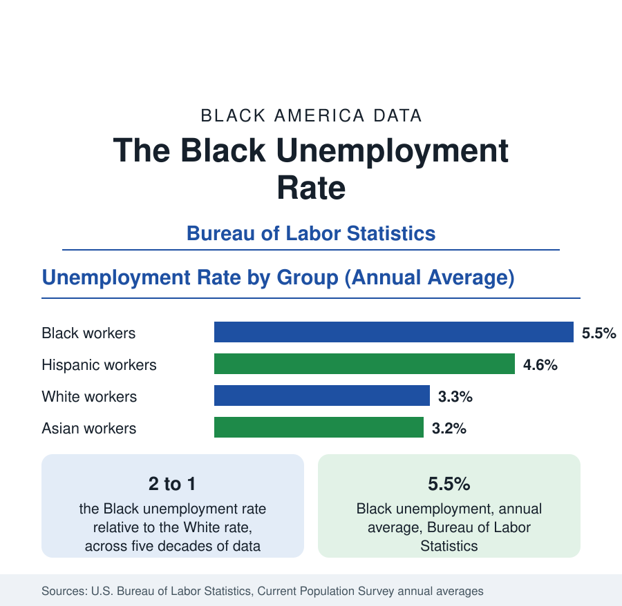

Black Employment
The Black Unemployment Rate: The Two-to-One Pattern
Black unemployment runs at roughly twice the White rate — 5.5 percent against 3.3 percent in annual averages — a ratio stable across five decades of federal data. How it is measured and why it persists.

The most durable pattern in American labor statistics is the relationship between the Black unemployment rate and the White unemployment rate: for as long as the Bureau of Labor Statistics has published both series, the Black rate has run at roughly twice the White rate. In the Bureau's annual averages, Black unemployment stands at 5.5 percent against 3.3 percent for White workers — a ratio of about 1.7 to 1 in a strong labor market, widening toward and beyond two to one in weaker years. This article explains how unemployment is measured, documents the two-to-one pattern, and summarizes what the data show about its causes and its behavior across the business cycle.
How Unemployment Is Measured
The unemployment rate counts people who are jobless, available for work, and actively looking — surveyed monthly in the Current Population Survey of households. It does not count discouraged workers who have stopped searching, who are tracked in broader measures, nor part-time workers seeking full-time hours. The labor force participation rate — the share of the population working or looking — is similar for Black and White adults, which means the unemployment gap is not an artifact of different participation: within the labor force, Black workers are jobless at roughly double the White rate.
The Two-to-One Pattern
The Bureau of Labor Statistics has published the Black unemployment rate in its modern form since the early 1970s, and across that entire span the ratio to the White rate has averaged close to two. The absolute levels swing with the economy — Black unemployment fell below 5 percent at its recorded best and exceeded 16 percent at its worst — but the ratio is strikingly stable: good years lower both rates together, bad years raise both, and the proportion between them barely moves. No other major demographic comparison in the labor data shows this combination of size and persistence, which is why economists treat the ratio, not any single month's levels, as the structural fact.
Age and Education
The gap is widest among the young. Black teenagers and workers in their early twenties record unemployment rates far above the overall Black figure — in weak labor markets, above one in four — while prime-age rates run closer to the average. Education narrows but does not close the gap: at every level of attainment, from high school diploma to advanced degree, Black unemployment exceeds White unemployment for the same credential. Black college graduates, notably, record unemployment rates closer to those of White workers with some college but no degree than to White graduates — one of the most replicated findings in the survey data, and a standard exhibit in research on hiring discrimination, occupational sorting, and network effects in job finding.
Recessions Hit First and Hardest
Across business cycles, Black employment behaves like an amplified version of the national cycle. Black workers are, on average, earlier to lose jobs in downturns and later to regain them in recoveries — the pattern summarized in the saying that Black America experiences a recession when the country catches a cold. Contributing structures visible in the data include shorter average job tenure, concentration in cyclically sensitive industries and in temporary and service employment, and lower average wealth buffers, which shorten job searches and push workers into the first available job rather than the best match. The employment section's related articles take up each mechanism in turn: tenure and displacement, industry distribution, and the earnings data.
Employment Beyond the Rate
Unemployment is only the entry point to the labor data this section covers. The same surveys measure the employment-to-population ratio, median weekly earnings, occupational distribution, union membership, and multiple-job holding, each with its own Black-white comparison, and each is the subject of a dedicated article here. The consistent ordering across all of them — a participation rate near parity, an unemployment rate near double, earnings near three-quarters — is the statistical signature of the Black position in the American labor market, and the baseline against which every change in the data should be read.
The summary the data support is compact. Black unemployment is not primarily a story of any single year or policy: it is a ratio, stable at roughly two to one across five decades of published data, visible at every age and every level of education, widening in downturns and narrowing only in the tightest labor markets. Understanding Black employment begins with that ratio, and the articles in this section proceed from it.
More in Black Employment
Black Median Weekly Earnings: The 80-Cent Ratio
Black full-time workers earn a median of about $900 a week — roughly 80 cents for every dollar White workers earn. The BLS earnings data by group, gender, and occupation.
Black Labor Force Participation: Working at National Rates
Black labor force participation runs at roughly the national rate — and Black women participate at higher rates than White women. The BLS participation data.
Black Workers by Occupation: Where Black America Works
About 36 percent of Black workers hold management or professional jobs; about one in five works in service occupations. The BLS occupational distribution and its history.
Source: U.S. Bureau of Labor Statistics, Current Population Survey, annual average unemployment rates.